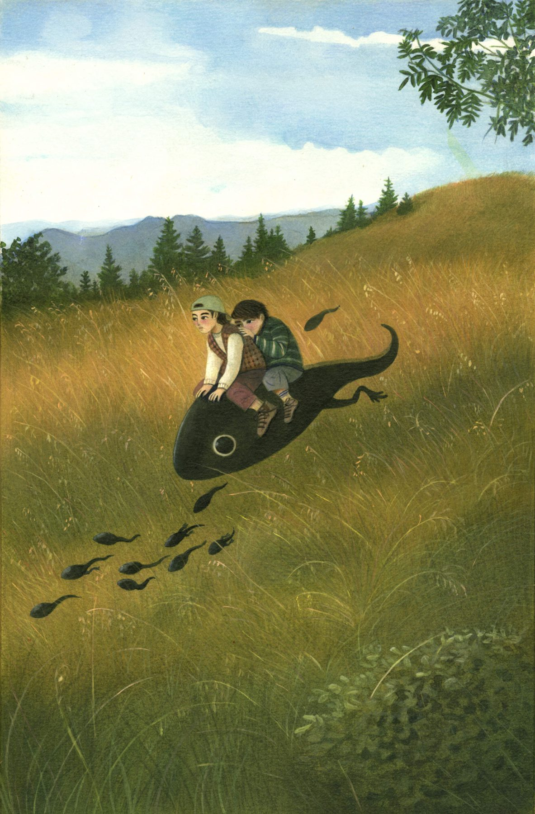
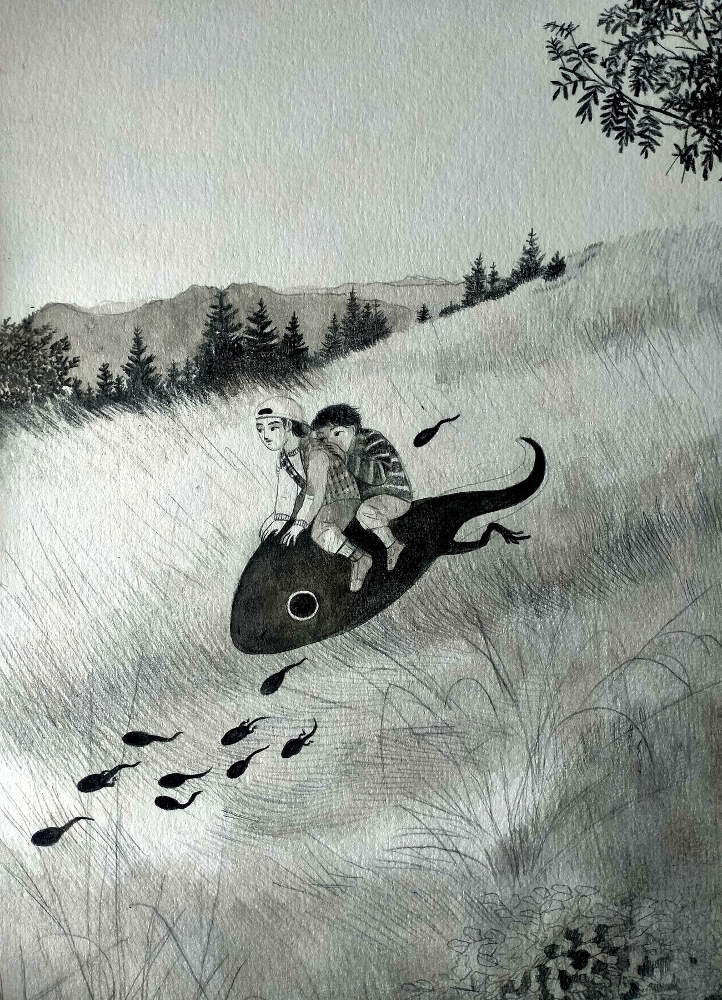

Idea nata dopo un'escursione in montagna. Uno studio di paesaggio in cui la ricerca si concentra sulle luci e sull'onirico, trasportando la realtà montana in una dimensione sospesa e fantastica, dove la natura si popola di visioni poetiche e creature inattese.
-giuliacornaggia.jpg)
